From Wuhan to Chicago,
by way of Hong Kong
and Shanghai.
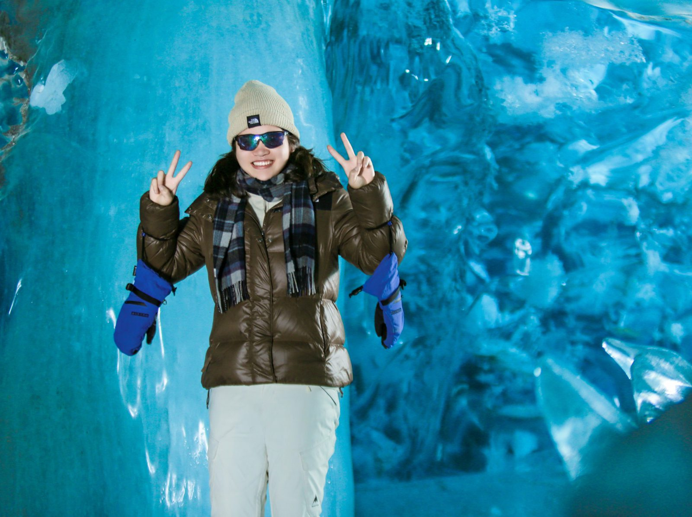
Jessie Chen, 陈亦奇. Born in Wuhan, Hubei. Economics at the Chinese University of Hong Kong, a product internship in Shanghai, now an MA in Computational Social Science at the University of Chicago, class of 2027.
Music, travel, skiing, musicals; two cats, Titi and Pupu, and two dogs, Damai and Dami. Also: an AI product manager role, which is what I am looking for. This page is the scrapbook version: the places, the animals, the Playbills, and the five AI products I shipped on my own this past year.
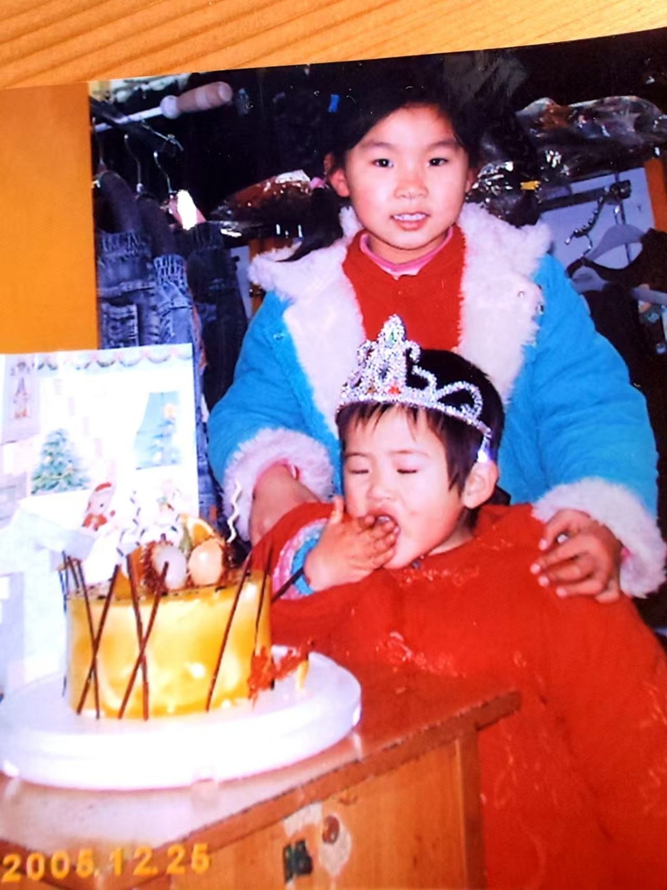

 陈亦奇
陈亦奇
Hong Kong first,
then Shanghai.
Four years at the Chinese University of Hong Kong, economics. New Asia College. I managed the men's football team, played on the women's basketball team, did the student-ambassador rounds and a stint at Toastmasters, and ran the campus happy run three years in a row. Mandarin, English, and Cantonese that got to intermediate.
My undergraduate thesis was on tax morale and compliance in Chinese listed firms, 7,000 firm-years, fixed effects. That is where "define the metric before the number" started.

Summer 2026, Shanghai. Product management intern at Droi, on a pre-installed content app for lower-tier Android phones. I owned a new comic-drama module from proposal to launch: eight PRD versions, full rollout in two weeks, 300K daily UV, about 13% of the OS's daily actives.
The other half of the summer was diagnosis: a re-engagement slot with clicks but no revenue turned out to be missing billing configs, not weak recommendations; an AI assistant with no quality metrics got a 30-question eval set and a 44% call-failure rate traced to unread error codes.
Chicago, now.
The MA is computational social science on the economics track, Phoenix Research Scholarship. The habit it gave me is simple: define the metric before you report the number.
What I research now: how AI systems make choices and how they shape the choices of the people who use them. Revealed-preference tests on LLM agents, and framing effects in 317,000 real human-LLM conversations.
Musicals, wherever I live.
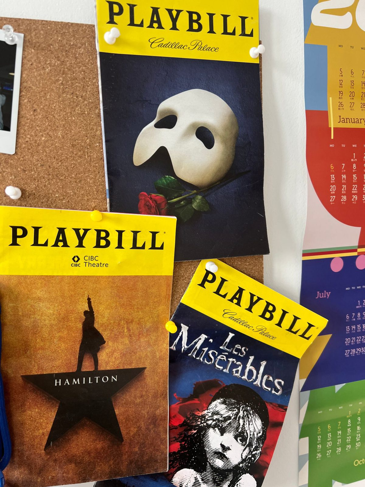
In Shanghai the habit turned into a product. MusiClaw takes public ticketing data for the city's musicals and turns it into something that updates itself every day: seat-map snapshots for 86 shows, cast attribution, four content pipelines feeding a real data account.
What the AI may and may not decide is written down, not assumed.
case studydashboard· pages in Chinese
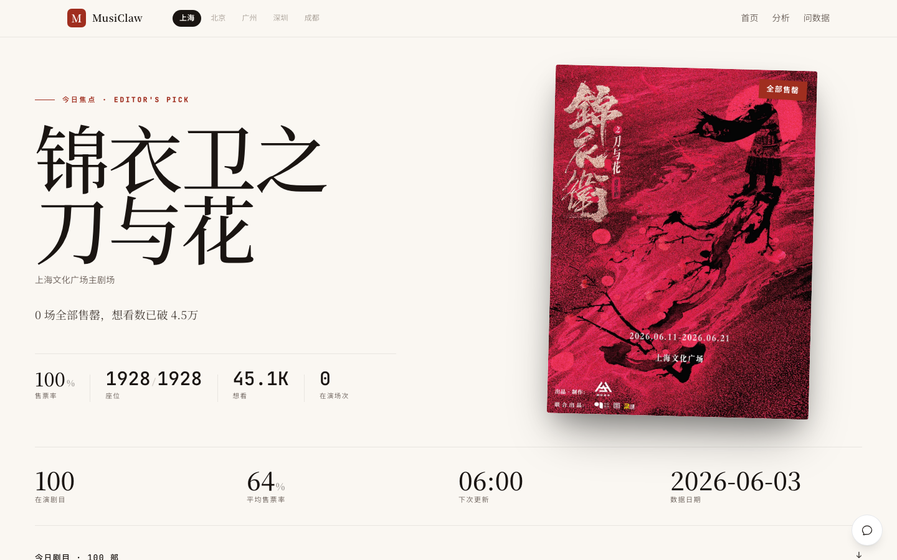
The other four,
all shipped this year.
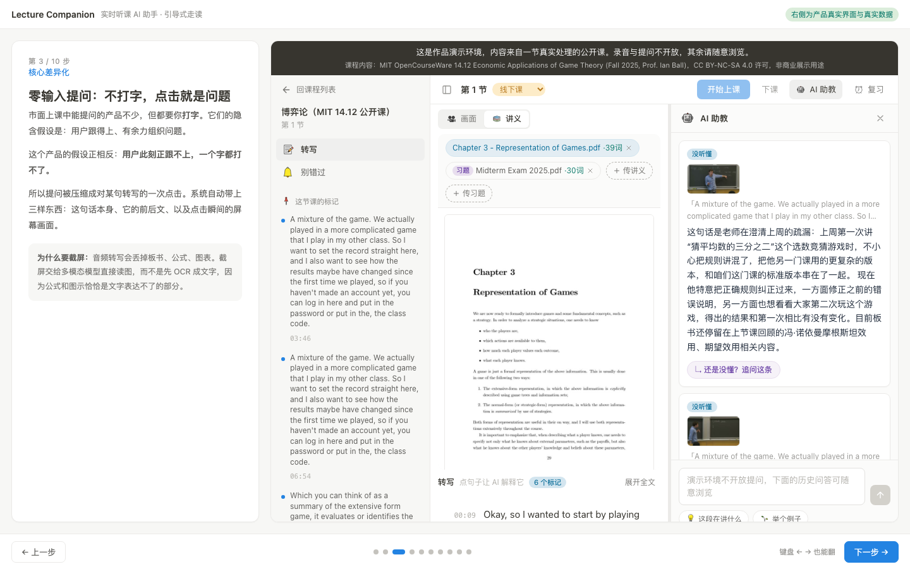
Lecture Companion. The bottleneck was input friction, not model capability. 63 marks, 59 with zero typing; shipped in three stages, zero rollbacks; ASR cost cut to a quarter.
xhs-threads. People bookmark constantly and organize never. The user only saves; the AI threads, annotates, and an independent reviewer model checks the output. 90% of calls on the light tier.
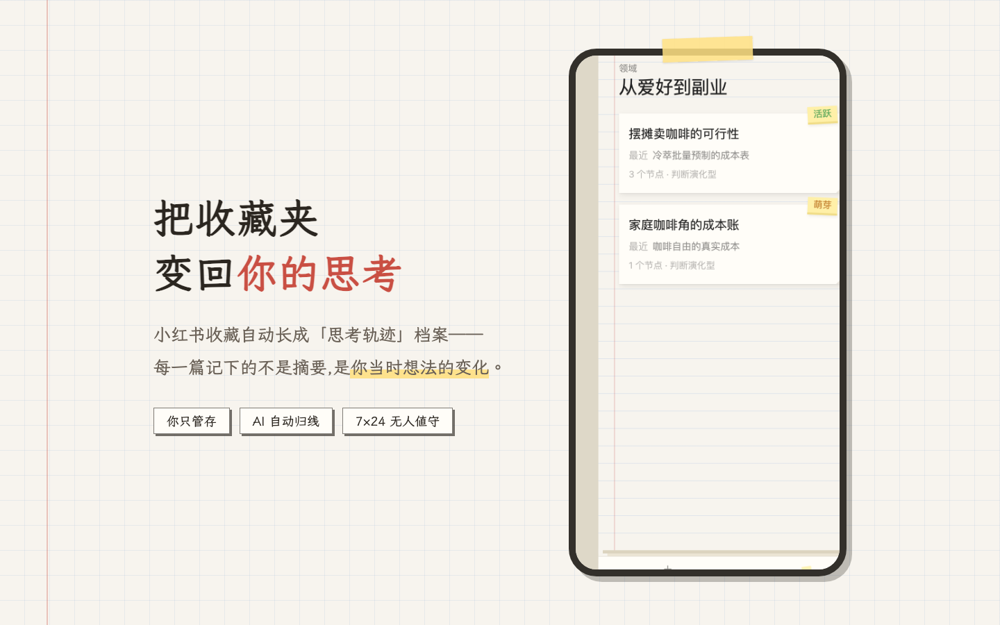

Nous. A nine-dimension cognitive model drives a message agent: it judges whether to reply, drafts in your way, and warns before you agree to something you will not do. Three clients in daily use.

Off hours.

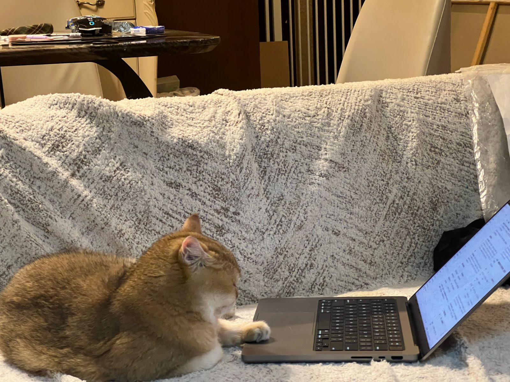
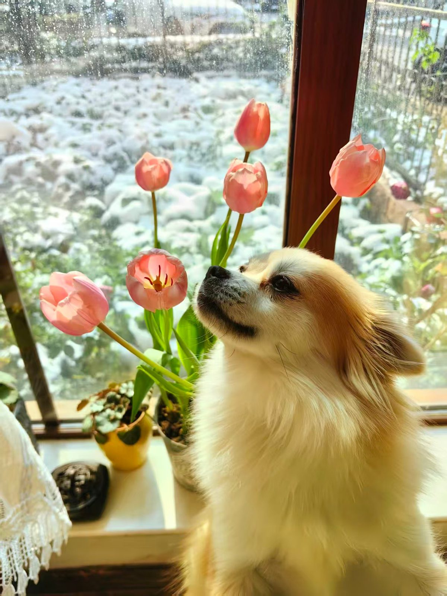
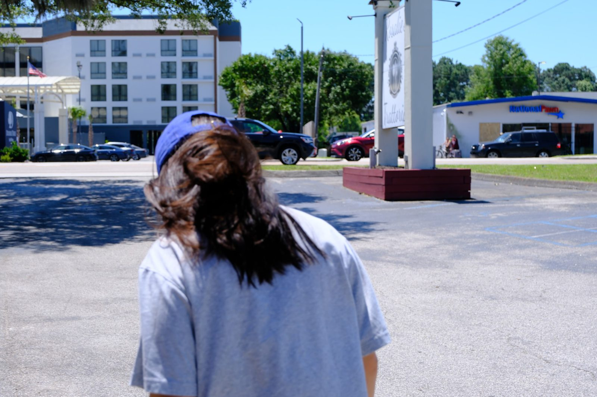
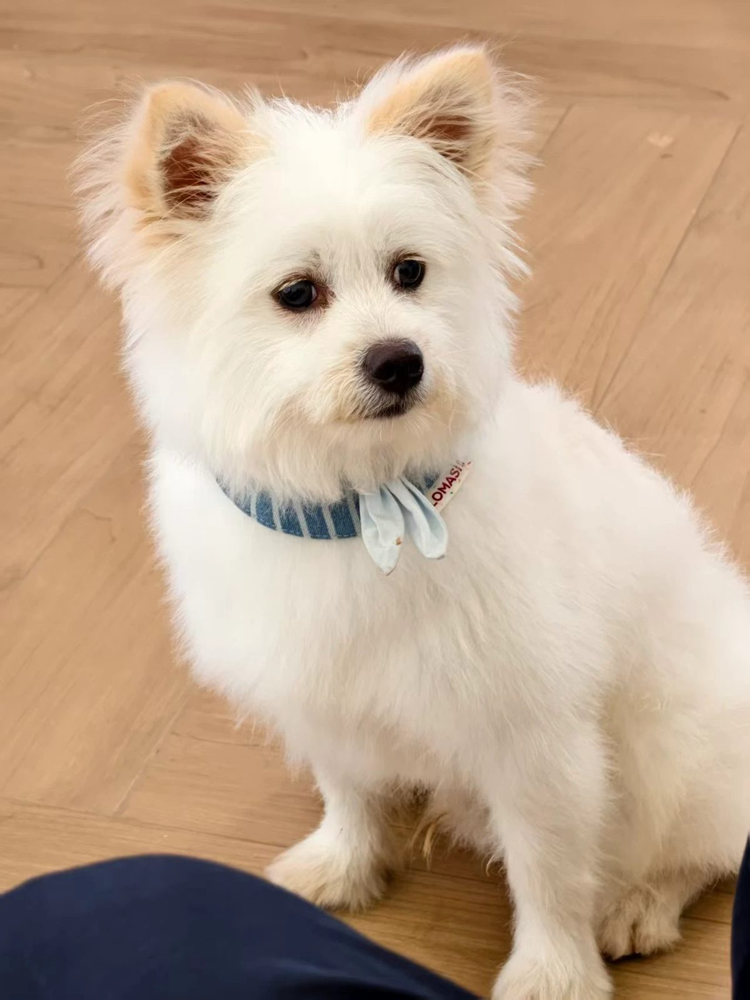
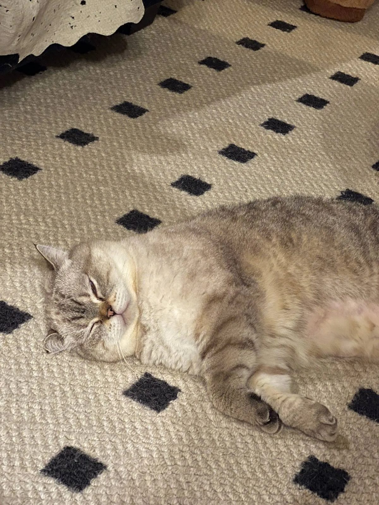
Music, travel, skiing, musicals, in no particular order. Two cats, Titi and Pupu; two dogs, Damai and Dami. The four rules from work come along too: pain point before solution, one layer of change per stage, metric before number, cost as a product parameter.
Say hello.
résumé (pdf)githubcurrent site
Chicago / Shanghai. Products and case pages are in Chinese; this page is in English. Hand-written HTML and CSS, no frameworks, no tracking.